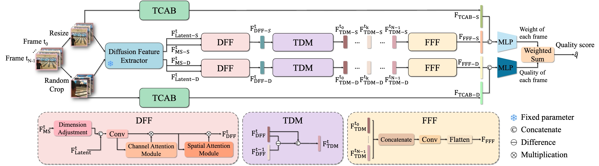
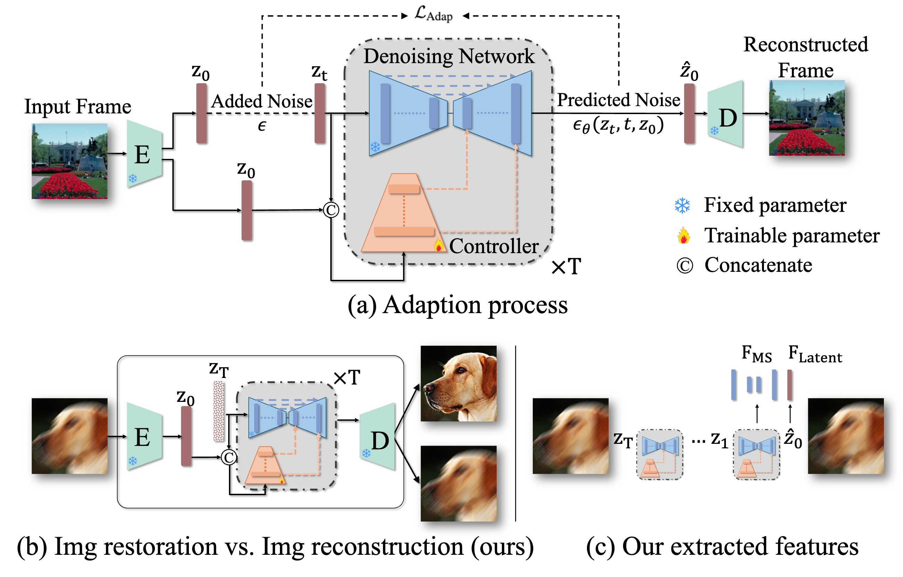
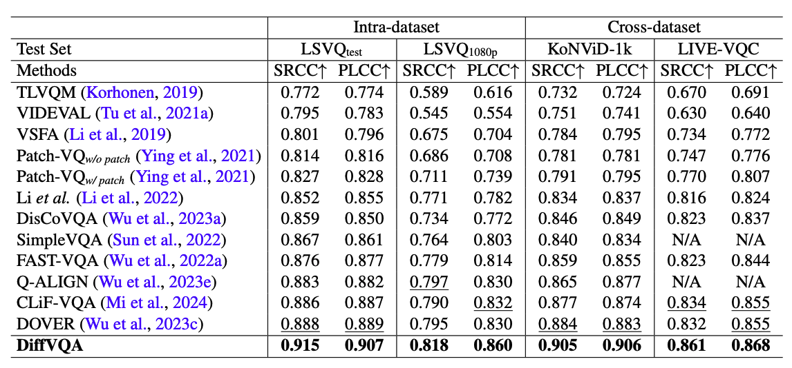

DiffVQA: Video Quality Assessment Using Diffusion Feature Extractor
DiffVQA introduces a novel Video Quality Assessment framework that leverages diffusion models pre-trained on extensive datasets as powerful feature extractors. Our framework adapts these models to reconstruct identical input frames through a control module, extracting semantic and distortion features from a resizing branch and a cropping branch, respectively.
Abstract
Video Quality Assessment (VQA) aims to evaluate video quality based on perceptual distortions and human preferences. Despite the promising performance of existing methods using Convolutional Neural Networks (CNNs) and Vision Transformers (ViTs), they often struggle to align closely with human perceptions, particularly in diverse real-world scenarios. This challenge is exacerbated by the limited scale and diversity of available datasets.
To address this limitation, we introduce a novel VQA framework, DiffVQA, which harnesses the robust generalization capabilities of diffusion models pre-trained on extensive datasets. Our framework adapts these models to reconstruct identical input frames through a control module. The adapted diffusion model is then used to extract semantic and distortion features from a resizing branch and a cropping branch, respectively. To enhance the model's ability to handle long-term temporal dynamics, a parallel Mamba module is introduced, which extracts temporal coherence augmented features that are merged with the diffusion features to predict the final score. Experiments across multiple datasets demonstrate DiffVQA's superior performance on intra-dataset evaluations and its exceptional generalization across datasets. These results confirm that leveraging a diffusion model as a feature extractor can offer enhanced VQA performance compared to CNN and ViT backbones.
Architecture of DiffVQA
The diffusion feature extractor extracts semantic and distortion features from video frames, which are enhanced by the DFF, TDM, and FFF modules. The TCAB modules are also used to capture temporal coherence in parallel. Features extracted from the resized branch are denoted with the suffix "-S" for semantic information, while those from the random crop branch use the suffix "-D" for distortion-related features.

Adapting Diffusion Model to Feature Extractor
(a) During training, only the Controller is optimized, with the text input set to null. The adaptation is directed by minimizing the discrepancy between the estimated and actual noise at each time step. (b) A similar architecture can be used for image restoration, but we repurpose it for image reconstruction here. (c) During inference, we use the reconstructed latent, along with the features from the Denoising Network at time step t = 0 as the extracted features.

Quantitative Results
Experiments across multiple datasets demonstrate DiffVQA's superior performance on intra-dataset evaluations and its exceptional generalization across datasets. These results confirm that leveraging a diffusion model as a feature extractor can offer enhanced VQA performance compared to CNN and ViT backbones.

Qualitative Results
Our adaptation allows reconstruction of video frames containing a spectrum of degradations with minimal error, demonstrating the effectiveness of the diffusion feature extractor in capturing both semantic and distortion information.

BibTeX
@misc{chen2025diffvqavideoqualityassessment,
title={DiffVQA: Video Quality Assessment Using Diffusion Feature Extractor},
author={Wei-Ting Chen and Yu-Jiet Vong and Yi-Tsung Lee and Sy-Yen Kuo and Qiang Gao and Sizhuo Ma and Jian Wang},
year={2025},
eprint={2505.03261},
archivePrefix={arXiv},
primaryClass={cs.CV},
url={https://arxiv.org/abs/2505.03261},
}